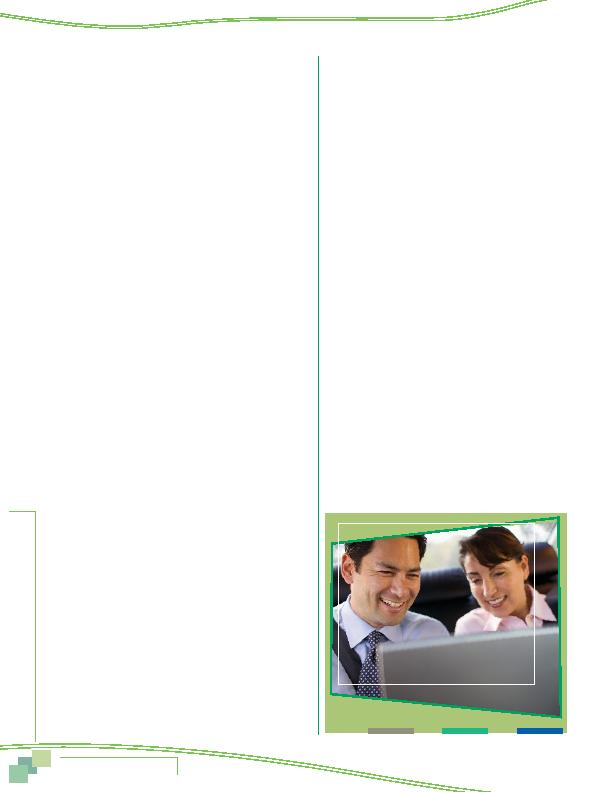

MWCOG-Comm
uter Conn
ecti
on
s-- 2010 State o
f th
e Comm
ute Report
8 2
11 Do you work a compressed or flexible work
schedule, for example, a full-time work week in
fewer than five days or a schedule with flexible
start and end times?
1 yes
(CONTINUE)
2 no
(SKIP TO Q13)
12 What type of schedule do you use?
(DO NOT READ,
UNLESS NEEDED TO CLARIFY
)
1 4/40 (4 10-hour days per week, 40 hours)
2 9/80 (9 days every 2 weeks, 80 hours)
3 3/36 (3 12-hour days per week, 36 hours - police,
fire, hospitals)
4 flex-time or flexible work hours (core hours with
flexible start & stop)
5 Work 5 or more days per week, 35 or more hours per
week (RECODE Q11 = 2)
6 other (SPECIFY)
INSTRUCTIONS BEFORE Q13
IF TELEALL (FROM Q10), AUTOCODE Q13 = 1, THEN SKIP TO
Q13a
13 Now I want to ask you about telecommuting,
also called teleworking. For purposes of this
survey, "telecommuters" are defined as "wage
and salary employees who at least occasionally
work at home or at a telework or satellite center
during an entire work day, instead of traveling
to their regular work place." Based on this
definition, are you a telecommuter?
1 yes
2 no
(SKIP TO Q14d)
9 DK/Ref
(SKIP TO Q14d)
13a Does your employer have a formal
telecommuting program at your workplace or do
you telecommute under an informal arrangement
between you and your supervisor?
1 formal program
2 informal arrangement
3 N/A
9 DK/Ref
IF TELEALL AND Q5 = 1, AUTOCODE Q14 = 4, THEN SKIP TO
INSTRUCTIONS BEFORE Q15
IF TELEALL AND Q5 = 2, AUTOCODE Q14 = 5, THEN SKIP TO
INSTRUCTIONS BEFORE Q15
IF TELEALL AND Q5 = 3, 4, 5, 6, OR 7, AUTOCODE Q14 = 6,
THEN SKIP TO INSTRUCTIONS BEFORE Q15
14 How often do you usually telecommute?
(DO NOT READ)
1 occasionally for special project
2 Less than one time per month/only in emergencies
(e.g., sick child, snowstorm)
3 1-3 times a month
4 one day a week
5 two days a week
6 3 or more times a week
7 other (SPECIFY) ____________________________
9 DK/Ref.
SKIP TO Q15
14d Does your employer have a formal
telecommuting program at your workplace or
permit employees to telecommute under an
informal arrangement with the supervisor?
1 yes, formal program
2 yes, informal arrangement
3 no
9 DK/Ref
14e Would your job responsibilities allow you to
work at a location other than your main work
place at least occasionally?
1 yes
2 no
(SKIP TO Q15)
9 DK/Ref
(SKIP TO Q15)
14f Would you be interested in telecommuting on an
occasional or regular basis?
1 yes, occasional basis
2 yes, regular basis
3 no
9 DK/Ref
Appendix--Survey Questionnaire